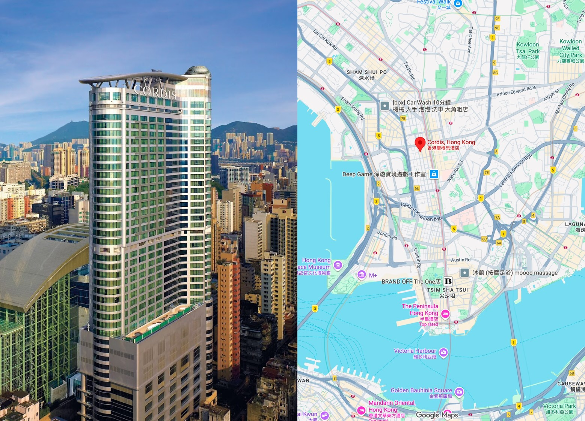

Venue & Hotels

Conference Venue
Location: Cordis, Hong Kong, 555 Shanghai St, Mong Kok
From MTR Mong Kok Station: 300m (approx. 5-minute walk)
From MTR Yau Ma Tei Station: 700m (approx. 10-minute walk)
From Hong Kong International Airport (HKG): 31km, approx. 30-40 minute driving
Getting here
From Hong Kong International Airport (HKG)
Option 1: Take the Airport Express to Tsing Yi Station, then take the Tung Chung Line to Lai King Station, then take the Tsuen Wan Line to Mong Kok Station (allow approx. 52 minutes overall). The Airport Express segment to Tsing Yi costs HK$73 with Octopus or HK$80 with a single-journey Smart Ticket; connecting MTR fares depend on the applicable ticket and transfer conditions.
Option 2: Take the Airport Express to Kowloon Station (approx. 22 minutes; HK$105 with Octopus or HK$115 with a single-journey Smart Ticket), then take a taxi (approx. 10 minutes; fare charged separately).
Option 3: Take a taxi directly from the airport to the hotel (journey duration: 31km, approx. 30-40 minutes, depending on traffic).
From Hong Kong West Kowloon Station (High-speed rail terminal)
Take the MTR, from Austin Station to Mong Kok Station (approx. 17 minutes).
Note:
Check the current Airport Express fares, timetable, and MTR route information before travelling. Journey estimates exclude waiting time and may vary with traffic and transfers.
For cross-border transport and ferry information, please refer to the respective operator websites.
Hotels

Cordis, Hong Kong, 555 Shanghai St, Mong Kok
All rooms and suites at Cordis Hong Kong are equipped with high-speed WiFi and an LED TV. The luxurious marble bathrooms come with separate bathtub and rainshowers. Cordis Hong Kong is less than 1 km from Ladies Market, Temple Street Night Market and Flower Market.
The wellness facilities include a fully equipped fitness centre, two fitness studios and an outdoor heated pool, along with the Chuan Spa, which features over 60 unique treatments.
Dining options include a contemporary Cantonese restaurant, Ming Court, the trendy European restaurant and bar, Alibi – Wine Dine Be Social, and The Garage Bar, the new outdoor food truck destination bar, as well as The Place, the hotel’s all day dining restaurant. If you wish to elevate your stay, the spacious Club Lounge offers premium privileges and services for the jetset.